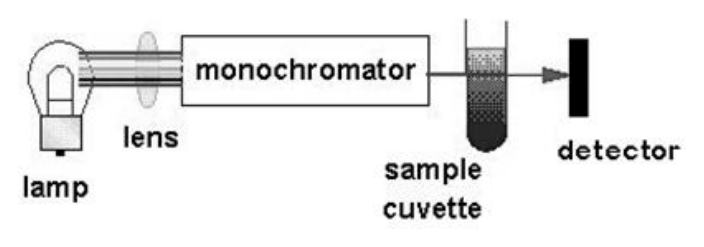

105 年第 1 次藥師藥物分析與生藥學試題與答案
這一頁是民國 105 年第 1 次藥師藥物分析與生藥學的整份歷屆試題，共 80 題，題目與標準答案出自考選部「國家考試試題及測驗式試題答案」開放資料。以下逐題列出題幹、選項與答案；要計時作答或記錄成績，請用線上練習。
考選部原始場次代碼：105020
線上作答這一科 →
全部 80 題
第 1 題
下列酸在非水溶劑中的酸性強度順序，何者正確？
- （A）H2SO4>HClO4>HCl
- （B）HClO4>HCl>HNO3
- （C）H2SO4>HCl>HBr
- （D）HClO4>HNO3>H2SO4
答案：（B）
第 2 題
某檢品中同時含有sulfanilamide和sulfathiazole兩種成分，若要以非水滴定選擇性分析 sulfathiazole的含量，下列何種“指示劑／溶劑”組合最適合？
- （A）Azo violet／butylamine
- （B）Azo violet／DMF
- （C）Thymol blue／butylamine
- （D）Thymol blue／DMF
答案：（D）
第 3 題
中華藥典中載明溶液之酸性或鹼性，除另有規定外，均係指對何種物質之檢測而判斷？
- （A）石蕊試紙
- （B）酚酞
- （C）酚紅
- （D）溴瑞香酚藍
答案：（A）
第 4 題
下列有關待標定物質與其標定時所使用之一級標準物之組合，何者正確？
- （A）鹽酸溶液；苯二甲酸氫鉀（potassium biphthalate）
- （B）氫氧化鈉溶液；碳酸鈉（sodium carbonate）
- （C）過氯酸溶液；苯二甲酸氫鉀（potassium biphthalate）
- （D）鹽酸溶液；已標定過之氫氧化鈉溶液
答案：（C）
第 5 題
有關亞硝酸鈉滴定法的敘述，下列何者錯誤？
- （A）可在15 ℃中進行
- （B）檢品須為一級芳香胺
- （C）用potassium chloride-starch試紙做內部指示劑偵測終點
- （D）滴定時滴定管下端需浸入檢品溶液液面下
答案：（C）
第 6 題
有關索氏抽提器（Soxhlet extractor）之敘述，下列何者錯誤？
- （A）利用泵浦循環，只需使用少量溶媒重覆萃取
- （B）檢品充填於濾紙筒（thimble）
- （C）利用虹吸方式進行溶媒循環抽提
- （D）抽提物含量（extractive content）測定可使用此抽提器
答案：（A）
第 7 題
植物油中若有摻入礦物油，下列何者會顯著提高？
- （A）碘價（Iodine value）
- （B）不皂化物（Unsaponifiable matter）
- （C）皂化價（Saponification value）
- （D）酸價（Acid value）
答案：（B）
第 8 題
下列何者最可能是藥品規格中的重金屬限量？
- （A）1000 ppm
- （B）500 ppm
- （C）100 ppm
- （D）<20 ppm
答案：（D）
第 9 題
Mitoxantrone hydrochloride的檢測項目中，不包括下列何者？
- （A）Ethanol
- （B）Bacterial endotoxins
- （C）Heavy metals
- （D）Water
答案：（B）
第 10 題
桂皮油之桂皮醛的含量測定，採用何法？
- （A）水蒸氣蒸餾法
- （B）Schiff base生成法
- （C）羥胺法（Hydroxylamine method）
- （D）亞硫酸氫鈉法（Bisulfite method）
答案：（D）
第 11 題
藍伯比爾定律（Beer-Lambert law）（A = ε × l × c）之下列何種參數數值與待測物所用之溶 媒有關？
- （A）ε與l
- （B）ε與c
- （C）c與l
- （D）ε與A
答案：（D）
第 12 題
請問下圖為何種儀器的裝置示意圖？

- （A）核磁共振光譜儀
- （B）螢光光譜儀
- （C）紫外光－可見光光譜儀
- （D）拉曼光譜儀
答案：（C）
第 13 題
下列何種元素無法利用atomic emission spectrophotometry進行含量分析？
- （A）Ba
- （B）Ca
- （C）Na
- （D）Zn
答案：（D）
第 14 題
以液相層析－質譜儀定量小分子藥物血中濃度，考量定量準確性、靈敏度及有限預算，下列 何種質譜儀為採購時之首選？
- （A）四極柱式質譜儀（Quadrupole MS）
- （B）飛行時間質譜儀（Time of flight MS）
- （C）扇形磁場質譜儀（Magnetic-sector MS）
- （D）離子捕獲質譜儀（Ion trap MS）
答案：（A）
第 15 題
下列何者是進行核磁共振光譜分析時所使用的樣品重量？
- （A）10 g
- （B）10 kg
- （C）10 mg
- （D）10 ng
答案：（C）
第 16 題
下列有關吸收光譜法之敘述，何者正確？
- （A）共軛雙鍵因降低n→π*之能階，而使最大吸收移至較短波長
- （B）芳香環含多組n→π*之躍遷
- （C）助色基團（auxochrome）可降低吸收波長
- （D）發色基團（chromophore）為引起吸光之關鍵基團
答案：（D）
第 17 題待校
以紫外光分光儀測量化合物之pKa值，可用下列何種公式計算？（Ai：離子化型吸光度；Au ：非離子化型吸光度）
答案：（A）
第 18 題
吸收紫外光150 nm之輻射能，最可能發生下列何種電子轉移（electronic transition）？
- （A）π→π*
- （B）σ→σ*
- （C）n→σ*
- （D）n→π*
答案：（B）
第 19 題待校
在 的氫核磁共振光譜中，X為下列何者時，其對位氫核的化學位移最 大？
- （A）CH3
- （B）Cl
- （C）NO2
- （D）OH
答案：（C）
第 20 題
下列何者不宜單用紫外光譜儀進行測定？
- （A）某些化合物的pKa值
- （B）某些藥物之溶離度測定
- （C）某些原料藥之定性
- （D）中草藥複方濃縮製劑之成分定量
答案：（D）
第 21 題
下列關於傅立葉轉換紅外光譜儀（FT-IR）之敘述，何者錯誤？
- （A）干涉儀主要元件是光束分歧器（splitter）、移動鏡、固定鏡等
- （B）光束分歧器是NaCl鹽片鍍上金箔，使一半的光線反射
- （C）紅外光源是Nernst glower或Globar
- （D）檢測器是熱偶檢測器（thermocouple detector）
答案：（B）
第 22 題
將銅半電池與鋅半電池電極以電位計及電流計串連，兩池液以鹽橋連接，構成一完整電路， 下列敘述何者錯誤？
- （A）當調整電位計使電流讀數為零時，電位計上顯示值即為此電池之電位
- （B）已知銅電極電位ECu=+ 0.34；鋅電極電位EZn= - 0.76，則此電池之電位等於- 0.42 V
- （C）此實驗中，銅、鋅電解液濃度皆為1 M
- （D）電池電位用 Ecell = El – Er 即可算出（l =左，r =右）
答案：（B）
第 23 題
使用100 MHz的核磁共振光譜儀進行某樣品的氫核磁共振光譜測定，氫核X的訊號出現在 2.10及2.20 ppm，為一組doublet。若改用500 MHz的核磁共振光譜儀測定時，下列何者為該 氫核訊號的化學位移？
- （A）1.90及2.40 ppm
- （B）2.10及2.20 ppm
- （C）2.14及2.16 ppm
- （D）2.15 ppm
答案：（D）
第 24 題
下列有關原子發散光譜測定法（atomic emission spectrophotometry, AES）的敘述，何者錯 誤？
- （A）其原理為當原子受熱激發後，會產生特定波長之輻射
- （B）離子化程度、檢品黏度等因素可能干擾AES之結果
- （C）此方法可應用於各種金屬原子
- （D）原子發散光譜之譜線極窄
答案：（C）
第 25 題
下列那一項不是近紅外光分析（near-infrared analysis, NIRA）所能測定者？
- （A）藥品粒徑大小
- （B）化合物的IR基本振動吸收帶
- （C）藥品製程中攪拌均勻度
- （D）藥品的水分含量測定
答案：（B）
第 26 題
下列何者的自旋量子數（spin quantum number）不是1/2？
- （A）2H
- （B）13C
- （C）15N
- （D）19F
答案：（A）
第 27 題
下列有關C6H5NH2之敘述，何者錯誤？
- （A）NH2基團為發色團（chromophore）
- （B）與苯相比其紫外光最大吸收波長（λmax）移至波長較長處（bathochromic shift）
- （C）與苯相比其紫外光最大吸光度A（1%, 1 cm）強度增加
- （D）與苯相比其極性增加
答案：（A）
第 28 題
下列何種儀器用於定量分析時，在適當條件下其可偵測極限濃度最低？
- （A）質譜儀
- （B）紅外光光譜儀
- （C）紫外光光度儀
- （D）核磁共振光譜儀
答案：（A）
第 29 題
氣相層析法不會用到下列何種平衡機制？
- （A）Partition between gas and liquid
- （B）Partition between gas and bonded surface
- （C）Ion exchange
- （D）Adsorption
答案：（C）
第 30 題
有關Van Deemter方程式（H = A + B/µ+ Cµ）之參數定義，下列何者正確？
- （A）A為相間質量轉換（mass transfer between phases）
- （B）B為多重移動路徑（multiple flow paths）
- （C）C為縱向擴散（longitudinal diffusion）
- （D）µ為移動相之線性速度
答案：（D）
第 31 題
下列何者非主成分含量測定須進行的確效項目？
- （A）準確度（Accuracy）
- （B）精密度（Precision）
- （C）選擇性（Selectivity）
- （D）偵測極限（Limit of detection）
答案：（D）
第 32 題
有關氣相層析法之敘述，下列何者正確？
- （A）常用之移動相為空氣
- （B）常用之層析管長度為10-30 cm
- （C）溫度梯度常運用於分析沸點分佈較廣之混合物
- （D）火焰離子偵測器對含鹵素之化合物有特異性
答案：（C）
第 33 題
有關電滲透流（EOF）之敘述，下列何者正確？
- （A）進行等電聚焦（isoelectric focusing）需有EOF輔助
- （B）使用teflon材質能增加EOF
- （C）緩衝溶液中添加甲基纖維素（methylcellulose）能抑制EOF
- （D）電滲透流為毛細管電泳分離蛋白質必要之動力
答案：（C）
第 34 題
毛細管區帶電泳法（CZE）中，下列何者係造成帶加寬（band broadening）的最主要因 子？
- （A）縱向擴散（Longitudinal diffusion）
- （B）渦流擴散（Eddy diffusion）
- （C）質量轉移（Mass transfer）
- （D）增加電壓
答案：（A）
第 35 題
在毛細管電泳分析中，下列何者的移動速率與電滲透流（electro-osmotic flow, EOF）相同？
- （A）陽離子界面活性劑
- （B）陰離子界面活性劑
- （C）非離子界面活性劑
- （D）兩性離子界面活性劑
答案：（C）
第 36 題待校
以毛細管區帶電泳（CZE）分析Voriconazole、Naphthalene及Aspirin三個藥物，在正常電 極模式（normal polarity）下其遷移時間由短至長之順序為何（背景緩衝液pH=5.0）？ Voriconazole Naphthalene Aspirin (pKa 1.8, 5.0, and 11.5) (pKa 3.5)
- （A）Voriconazole＜Naphthalene＜Aspirin
- （B）Voriconazole＜Aspirin＜Naphthalene
- （C）Aspirin＜Naphthalene＜Voriconazole
- （D）Aspirin＜Voriconazole＜Naphthalene
答案：（A）
第 37 題
一般液相層析法中，移動相在高流速下會造成層析峰變寬（band broadening）現象，下列 何因子受高流速影響最大？
- （A）渦旋擴散（Eddy diffusion）
- （B）縱向擴散（Longitudinal diffusion）
- （C）固定相質量轉移（Stationary phase mass transfer）
- （D）移動相質量轉移（Mobile phase mass transfer）
答案：（C）
第 38 題
下列關於液相層析法移動相的沖提力（eluotropic power）的敘述，何者錯誤？
- （A）在逆相層析中，水的沖提力最小
- （B）在正相層析時，移動相在氯仿中逐漸增加甲醇比例，可加大沖提力
- （C）在逆相層析時，乙腈-水作移動相，逐漸增加乙腈比例，可加大沖提力
- （D）在逆相層析採梯度沖提時，一般以漸增移動相極性之方式進行
答案：（D）
第 39 題
某化合物的分子式為C10H18BrClO3，下列何者為該化合物的不飽和度？
- （A）1
- （B）2
- （C）4
- （D）8
答案：（A）
第 40 題
承上題，下列何者最可能為該化合物所含有的芳香環數目？
- （A）0
- （B）1
- （C）2
- （D）3
答案：（A）
第 41 題
下列何者不屬於植物初次代謝物（primary metabolic products）？
- （A）alkaloids
- （B）carbohydrates
- （C）proteins
- （D）fatty acids
答案：（A）
第 42 題
Peptidomimetics是一種：
- （A）蛋白質分析方法
- （B）蛋白質合成技術
- （C）功能性蛋白質
- （D）擬蛋白質之藥物
答案：（D）
第 43 題
大棗、黨參及黃耆常作為補氣藥，其性味的共同特性為何？
- （A）甘
- （B）苦
- （C）辛
- （D）酸
答案：（A）
第 44 題
有關生藥與主成分之配對，下列何者錯誤？
- （A）frangula－barbaloin
- （B）rheum－rhein
- （C）Indian rhubarb－rhein
- （D）aloe－barbaloin
答案：（A）
第 45 題
有關人參的敘述，下列何者錯誤？
- （A）為茄科植物
- （B）主成分ginsenosides為四環三萜類
- （C）主成分之一為ginsenoside Rg1
- （D）具有adaptogen之功效
答案：（A）
第 46 題
下列何種生藥之主成分為digoxin？
- （A）Digitalis purpurea
- （B）Digitalis lanata
- （C）Digitalis thapsi
- （D）Digitalis ferruginea
答案：（B）
第 47 題
Emodin之生合成前驅物（precursor）為：
- （A）mevalonic acid
- （B）tyrosine
- （C）shikimic acid
- （D）acetate
答案：（D）
第 48 題
下列有關蘆薈的敘述，何者錯誤？
- （A）屬於石蒜科植物
- （B）水溶性抽取物不得少於50%
- （C）含barbaloin及isobarbaloin
- （D）可治療燒燙傷
答案：（A）
第 49 題
下列何種中藥屬於蘭科（Orchidaceae）？
- （A）Gastrodiae Rhizoma
- （B）Ophiopogonis Radix
- （C）Patrinia Herba
- （D）Carthami Flos
答案：（A）
第 50 題
甘草的黃色，係由下列何類成分造成？
- （A）triterpenoids
- （B）flavonoids
- （C）polysaccharides
- （D）saponins
答案：（B）
第 51 題
下列何種配醣體係屬S-glycoside？
- （A）amygdalin
- （B）arbutin
- （C）sinigrin
- （D）aloin A
答案：（C）
第 52 題
山茱萸之成分loganin、sweroside與morroniside在化學分類上屬於何者？
- （A）triterpenoid
- （B）monoterpenoid
- （C）diterpenoid
- （D）sesquiterpenoid
答案：（B）
第 53 題
下列中藥何者含xanthiazone成分？
- （A）蒼耳子
- （B）胖大海
- （C）栝樓
- （D）枸杞
答案：（A）
第 54 題
茯苓的使用部位為︰
- （A）種子
- （B）根莖
- （C）菌核
- （D）孢子
答案：（C）
第 55 題
下列何成分可用於合成樟腦（camphor）？
- （A）cineole
- （B）pinene
- （C）thujone
- （D）fenchone
答案：（B）
第 56 題
薄荷腦屬於下列何種成分？
- （A）酯類
- （B）醇類
- （C）醛類
- （D）酚類
答案：（B）
第 57 題
川芎屬於何科植物？
- （A）Leguminosae
- （B）Polygonaceae
- （C）Ranunculaceae
- （D）Umbelliferae
答案：（D）
第 58 題
下列有關Valeriana officinalis之敘述，何者錯誤？
- （A）valerenic acid為雙萜類
- （B）valerenolic acid為其成分之一
- （C）藥用部位為根莖與根
- （D）valepotriates可幫助睡眠
答案：（A）
第 59 題
艾葉可用於：
- （A）活血化瘀
- （B）血熱妄行
- （C）清熱涼血
- （D）崩漏帶下
答案：（D）
第 60 題
檸檬油（lemon oil）之製備方法及主成分之配對為：
- （A）壓榨法－limonene
- （B）壓榨法－citral
- （C）蒸餾法－citral
- （D）溶媒抽取法－limonene
答案：（A）
第 61 題
Lignan是由幾個phenylpropanoid結合而成？
- （A）2
- （B）3
- （C）4
- （D）5
答案：（A）
第 62 題
下列有關鞣質（tannin）之敘述，何者錯誤？
- （A）不易結晶
- （B）與氨水作用呈深藍色
- （C）與蛋白質結合易產生沉澱
- （D）曾當生物鹼中毒之解毒劑
答案：（B）
第 63 題
下列何者成分之歸類不屬於phenylpropanoid？
- （A）khellin
- （B）coumarin
- （C）rutin
- （D）emodin
答案：（D）
第 64 題
Chinese gall之主要成分為：
- （A）gallic acid
- （B）ellagic acid
- （C）flavan-3-ol
- （D）galloylglucose
答案：（D）
第 65 題
訶子用於澀腸止瀉時，常以下列何種炮製法炮製，以增加效用？
- （A）生用
- （B）麩皮炒
- （C）酒蒸
- （D）薑汁製
答案：（B）
第 66 題
下列有關薑（ginger）的敘述，何者正確？①薑之辛辣成分為zingiberol ②薑可作為刺激劑 ③研究顯示薑亦具有止吐作用
- （A）僅①②
- （B）僅①③
- （C）僅②③
- （D）①②③
答案：（C）
第 67 題
Enfleurage常用於提取下列那一類成分？
- （A）protein
- （B）lignin
- （C）volatile oil
- （D）alkaloids
答案：（C）
第 68 題
托品酸（tropic acid）的生合成前驅物（precursor）為：
- （A）色胺酸（tryptophan）
- （B）苯丙胺酸（phenylalanine）
- （C）精胺酸（arginine）
- （D）鳥胺酸（ornithine）
答案：（B）
第 69 題
下列何種為水溶性麥角生物鹼？
- （A）ergonovine
- （B）ergotamine
- （C）ergotoxine
- （D）ergosinine
答案：（A）
第 70 題
下列有關生藥與植物基原之配對，何者錯誤？
- （A）belladonna－Atropa belladonna
- （B）hyoscyamus－Hyoscyamus niger
- （C）stramonium－Datura stramonium
- （D）cola－Erythroxylum coca
答案：（D）
第 71 題
下列生藥名、科名及成分之配對，何者錯誤？
- （A）ipecac－Rubiaceae－emetine
- （B）opium－Papaveraceae－codeine
- （C）cinchona－Rutaceae－quinine
- （D）rauwolfia serpentina－Apocynaceae－reserpine
答案：（C）
第 72 題
下列常用中藥、科別及藥用部位之配對，何者正確？
- （A）黃柏－Rutaceae－根莖
- （B）苦參－Leguminosae－莖
- （C）附子－Ranunculaceae－旁生塊根
- （D）貝母－Liliaceae－果實
答案：（C）
第 73 題
下列何者非阿片（opium）所含之生物鹼？
- （A）morphine
- （B）papaverine
- （C）ephedrine
- （D）noscapine
答案：（C）
第 74 題
下列何者非purine類生物鹼？
- （A）caffeine
- （B）uracil
- （C）theophylline
- （D）theobromine
答案：（B）
第 75 題
吳茱萸之使用部位為：
- （A）根莖
- （B）種子
- （C）葉子
- （D）果實
答案：（D）
第 76 題
為防止不飽和脂肪油酸敗，常應用下列何反應將植物油製成半固體產品？
- （A）decarboxylation
- （B）esterification
- （C）hydrogenation
- （D）transamination
答案：（C）
第 77 題
下列那一科別之植物的精油主要藏於glandular hair中？
- （A）Apiaceae
- （B）Lamiaceae
- （C）Leguminosae
- （D）Pinaceae
答案：（B）
第 78 題
南美洲箭毒（curare）主要藥效成分之化學結構屬於：
- （A）protoberberines
- （B）phthalideisoquinolines
- （C）benzophenanthridines
- （D）benzylisoquinolines
答案：（D）
第 79 題
下列生物鹼何者不具異奎啉（isoquinoline）架構？
- （A）吐根鹼（emetine）
- （B）北美黃連鹼（hydrastine）
- （C）蛇根鹼（reserpine）
- （D）小檗鹼（berberine）
答案：（C）
第 80 題
下列藥用植物之基原、使用部位及科別之配對，何者錯誤？
- （A）Erythroxylum coca－leaves－Erythroxylaceae
- （B）Cinchona succirubra－bark－Rubiaceae
- （C）Rauvolfia serpentina－root－Papaveraceae
- （D）Catha edulis－leaves－Celastraceae
答案：（C）
其他年度
回到藥師藥物分析與生藥學的年度總覽，
或到藥師題庫首頁看其他科目。
題目與標準答案出自考選部「國家考試試題及測驗式試題答案」開放資料。依中華民國《著作權法》第 9 條第 1 項第 5 款，
依法令舉行之各類考試試題不得為著作權之標的，得自由利用。詳解為 AI 整理的學習輔助，
並非官方標準答案；中華民國法規會修訂，引用前請對照現行版本查證。